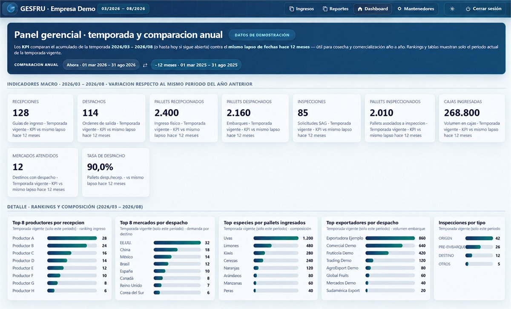
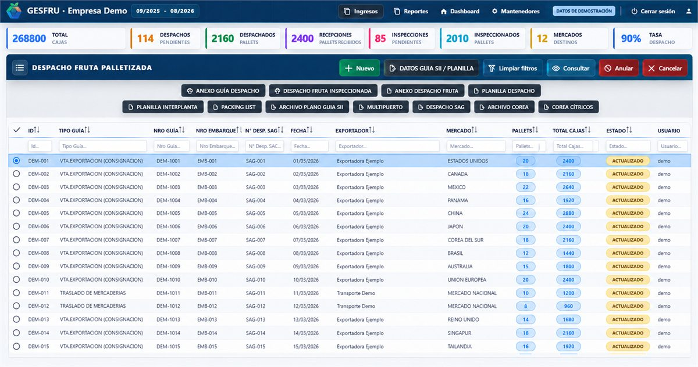
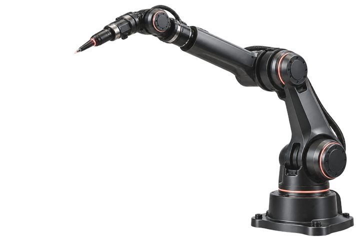

Costos que crecen
Licencias por usuario, módulos adicionales y servicios que no siempre evolucionan con tus prioridades.
Productos propios · Automatización · IA aplicada
En MS Soluciones Tecnológicas SpA diseñamos, migramos e implementamos sistemas propios para empresas que necesitan más control sobre sus procesos, datos y evolución tecnológica.
Integramos lo que ya utilizas, lo reemplazamos por etapas o construimos sobre productos que ya están en funcionamiento.

Pantalla adaptada con datos ficticios para proteger la operación real.
Tecnología con acompañamiento
Sofía explica nuestro modelo en menos de treinta segundos: partir desde lo que ya utilizas, definir un camino realista e incorporar automatización donde aporta valor.
Cuando el software no avanza contigo
Antes de proponer un reemplazo, revisamos si conviene integrar, adaptar o migrar por etapas.
Licencias por usuario, módulos adicionales y servicios que no siempre evolucionan con tus prioridades.
Datos repartidos entre el sistema, Excel, correos y WhatsApp dificultan la trazabilidad y el control.
La empresa termina ajustándose al producto del proveedor, en vez de tener tecnología alineada con su operación.
Tareas repetitivas, revisiones y respuestas siguen dependiendo de personas aunque podrían asistirse o automatizarse.
Un sistema que puede evolucionar contigo
El alcance, la entrega y las condiciones de propiedad se definen en la propuesta y el contrato. Infraestructura, soporte y servicios externos se presentan por separado y con transparencia.
Conectamos tu sistema actual con nuevos reportes, automatizaciones, canales o servicios de inteligencia artificial.
Conserva lo que ya funcionaPartimos desde una solución existente y la configuramos para los procesos, perfiles y reglas de tu empresa.
Reduce el tiempo de partidaCreamos una plataforma y trasladamos la información por etapas, procurando continuidad operacional.
Avanza con una hoja de rutaTransparencia: un producto propio también requiere operación responsable. Hosting, respaldos, soporte, mensajería e IA pueden generar costos recurrentes, pero se presentan como servicios identificables y no como una dependencia artificial.
Productos que ya están en funcionamiento
Cuatro bases tecnológicas que demuestran capacidad operativa, integración, automatización y control.

Gestión frutícola y trazabilidad operacional
Conecta la recepción de fruta con pallets, inspecciones, transformaciones, inventario, despachos y reportes.
CRM conversacional con agente IA
Organiza conversaciones, contactos y oportunidades mientras un agente configurable responde y deriva a una persona cuando corresponde.
Inventario, solicitudes y abastecimiento
Controla stock disponible, reservado y crítico, administra solicitudes internas y facilita el análisis de consumo y compras.
Gestión financiera y tributaria asistida
Organiza documentos y movimientos bancarios, facilita conciliaciones y permite consultar información mediante un asistente controlado.
Las mini interfaces de Nexora, ControlStock 360 y MiSpA IA son representaciones conceptuales de capacidades implementadas; no contienen información de clientes.
Inteligencia artificial con propósito
No incorporamos inteligencia artificial para decorar una presentación. Definimos límites, permisos, trazabilidad y revisión humana antes de llevarla a la operación.

Automatización aplicadaTecnología con acompañamiento
Revisamos procesos, usuarios, sistemas actuales, datos, costos y puntos críticos.
Acordamos qué conviene integrar, adaptar o reemplazar, junto con alcance y etapas.
Diseñamos la solución, configuramos ambientes y planificamos la migración.
Validamos los flujos, ponemos en marcha el sistema y capacitamos a las personas.
Apoyamos la adopción, resolvemos ajustes y verificamos la continuidad operacional.
Incorporamos módulos, integraciones o automatizaciones cuando decides avanzar.
Antes de comenzar
La primera decisión no es qué tecnología comprar, sino qué conviene conservar, conectar y mejorar.
Conversar sobre mi casoNo. Primero evaluamos si conviene integrarlo, complementarlo o realizar una migración progresiva. El objetivo es proteger la continuidad de la operación.
Sí, después de revisar su estructura, calidad y disponibilidad. La estrategia y las validaciones se definen antes de comenzar.
Depende del producto, personalizaciones y modalidad acordada. Código, documentación, accesos y condiciones de propiedad quedan establecidos en la propuesta y el contrato.
No necesariamente. Hosting, respaldos, soporte, mensajería, almacenamiento e IA pueden tener costos operativos. Se presentan de forma separada y transparente.
Sí, cuando disponen de APIs, exportaciones u otros mecanismos técnicamente viables y autorizados.
Solo en las tareas y límites definidos. Las operaciones sensibles pueden exigir confirmación, permisos, registro de actividad y revisión humana.
Empecemos por entender tu operación
Cuéntanos qué plataforma utilizas, qué pagos mantiene y qué procesos todavía dependen de planillas o trabajo manual.